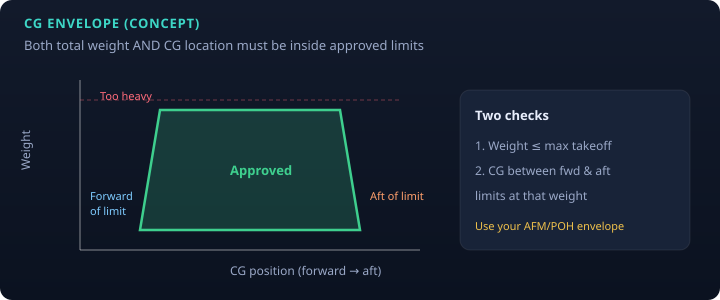
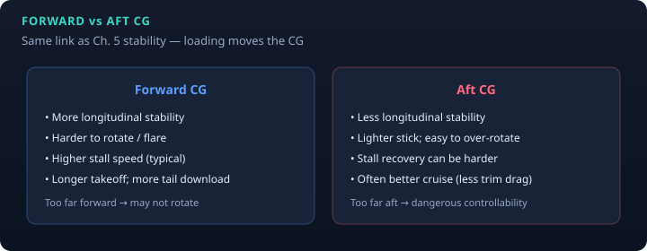

PHAK Ch. 10 · Ch. 5 CG link · study note
Weight and balance
Loading is not just “don’t exceed gross weight.” You must keep total weight and the center of gravity (CG) inside the approved envelope. Math is simple; judgment is not. Practice: Weight & Balance Lab (toy airplane, not your AFM).
Why it matters
- Controllability / stability: CG position drives longitudinal stability (see stability). Outside limits, elevator authority or recovery can fail.
- Structure: overweight raises loads in turbulence and on landing gear.
- Performance: higher weight → higher stall speed, longer takeoff/landing, worse climb (stacks with density altitude).
Core math

Moment = Weight × Arm
CG = Total Moment ÷ Total Weight
Units: weight in lb (or kg), arm in inches (or mm) from datum, moment in lb·in (or equivalent). Aft of the datum is usually positive.
| Term | Meaning |
|---|---|
| Datum | Imaginary reference plane; all arms measured from it |
| Arm / station | Distance from datum to an item’s CG |
| Moment | Weight × arm (rotational “leverage” about the reference) |
| Basic empty weight | Common starting point (empty + optional equipment; check aircraft records) |
| Useful load | Max weight − empty (people, bags, usable fuel…) |
| Payload | Occupants + cargo (fuel separate in many definitions) |
| Usable fuel | Fuel that can be used in flight (~6 lb/gal avgas rule of thumb) |
The two checks

- Start with empty weight and empty moment from the aircraft’s W&B data.
- Add each item: fuel, seats, baggage—with the correct arm from the AFM/POH.
- Sum weights and moments → compute CG.
- Compare to max weight and CG envelope (graph or table method in the AFM).
Forward vs aft CG

Fuel burn and shifts
- Burning fuel changes weight and often CG (depends where the tanks are).
- Moving bags between compartments changes moment without changing total weight much if only shifting.
- When in doubt, recompute for takeoff and for landing (fuel remaining).
Pilot habits
- Use this airplane’s current empty weight/moment (equipment changes matter).
- Don’t trust passenger “guess weights”—pad for safety.
- Heavy + high DA + aft/forward extreme CG is a common accident recipe.
Practice
Sources
- FAA PHAK Ch. 10 — Weight and Balance
- PHAK Ch. 5 — longitudinal stability / CG
- MIT 16.687 Lecture 18 — terms, moment, forward/aft effects
Figures are educational schematics. Real limits come only from the AFM/POH.